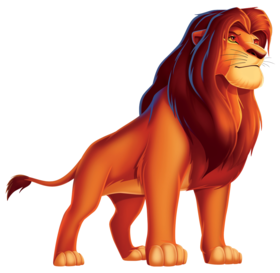

|
|
навигация
Симба — сын Короля-льва Муфасы и королевы Сараби, племянник Шрама. В детстве был неугомонным и любопытным львёнком, из-за чего часто попадал в неприятности. После внезапной смерти отца (в которой винит себя) львёнок был вынужден покинуть родное королевство. За пределами родины львёнка приютили и воспитали сурикат Тимон и бородавочник Пумба, и бок о бок с ними беглый юный принц живёт беззаботную и лёгкую жизнь. Став взрослым, Симба встречается с духом погибшего отца, убедившего его в истинном предназначении. Прозревшему и разобравшемуся в себе принцу предстояло вернуться и спасти Земли Прайда от окончательного упадка. Ныне он — король Земель Прайда, муж Налы и отец трех детей: дочери-наследницы Киары, сына Кайона, лидера Львиной Охраны и старшего сына Копы.
он также очень храбрый
| тип | тип |
| пол | мужской |
| Характер | упертый |
| ... | ... |
| Все материалы взяты с сайта ВИКИПЕДИИ ! МОЖЕТЕ ПРОВЕРИТЬ САЙТ ДЕЛАЛ ЮНЫЙ ПРАГРФМИСТ | Kiber One! |